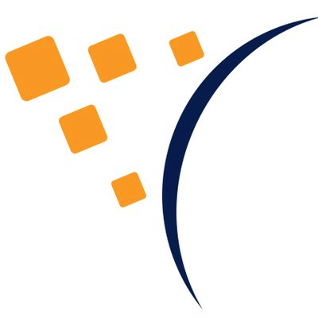
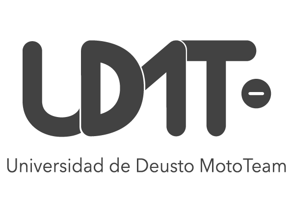

Experience
-

2026 — Now
Engineering Department · R&D
Satlantis · Bilbao
- Working on an R&D project in Space Situational Awareness (SSA): a system that continuously monitors a region of space to detect objects in orbit passing near our satellite.
- Designing an optical system that redirects its line of sight towards a detected object with minimal power, instead of pointing the camera in advance and hoping the object crosses the field of view.
- Enabling the system to track objects of interest for several seconds once detected.
- Building a compact prototype from scratch: a test bench to validate the tracking within the dimensions of a secondary payload. It is not tested attached to another payload.
- Developing the software architecture for detection, pointing and tracking.
-

2023 — Now
General Coordinator · Electronics & Software Engineer
Deusto Moto Team · Student team, University of Deusto · Bilbao
- Lead the electronics & software area (14 people) of a 32-person student team that designs and builds an electric racing motorbike for the international MotoStudent competition, under strict technical rules and tight deadlines.
- Ran the first telemetry test: read the ECU's CAN frames with PCAN-View and sent test messages from an ESP32 over MQTT (Mosquitto) to InfluxDB, all running in Docker.
- Defined the battery requirements with the team (a 29S16P pack, from the calculated range and the motor voltage); an external company designed and manufactured it.
- Designed the whole electrical system of the bike (start-up and charging sequences, emergency stop) and its central PCB in KiCad: a 4-layer board where an ESP32-S3 connects sensors and controllers and manages the states of the bike. The first version is manufactured and the second is in design.
- As General Coordinator, coordinate the work between the different areas of the team.